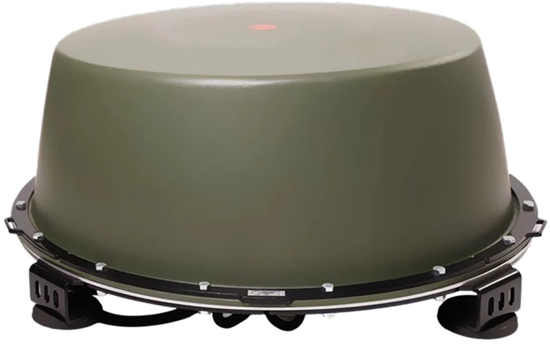

Аксессуары
Блок-реле 24 В для станций РЭБ «Капюшон»
Питание24 В, 150 А
Разъёмы25 мм — 2 шт.
Габариты115×90×60 мм
по запросу01
Купольные, переносные и стационарные комплексы защиты объектов от БПЛА. Официальная линейка производителя в самостоятельном каталоге «В ОКОПЕ».

Российский разработчик и производитель станций РЭБ для защиты объектов от БПЛА.
Собственное конструкторское бюро и производство полного цикла: от корпуса и антенн до сборки и заводских испытаний. В линейке более 20 моделей: купольные станции для транспорта, стационарные направленные комплексы, переносные рюкзаки, обнаружители дронов и аксессуары.
«Капюшон» — зарегистрированный товарный знак производителя (свидетельство № 1086620 от 14.02.2025); на внешний вид станции получен патент RU 145992 S. На изделия оформлены сертификат соответствия и декларация о соответствии ЕАЭС. Гарантия — 12 месяцев; сервис и техническую поддержку обеспечивают производитель и его представители.
Сведения об изготовителе: для «Капюшон» К-12М в паспорте — ООО «НПО „КИЛОВАТТ“»; для «Ребус-4», «Штора» К-12/700, «Штора-М» К-8/600 — ООО «НПО „МЕГАВАТТ“» (Липецк).

Купольная станция для защиты транспорта и объектов от ударных и разведывательных дронов. Корпус-купол из армированного радиопрозрачного стеклопластика рассчитан на длительную эксплуатацию в разных погодных условиях и крепится на крышу кабины, КУНГ или верхнюю точку техники. 12 каналов подавления перекрывают основные диапазоны управления и видеосигнала — от 300 до 5900 МГц.

Стационарный комплекс для защиты площадных объектов: заводов, складов, аэродромов, полигонов, парков и полей. Конструкция — четыре моноблока с направленными антеннами на крестообразном основании; суммарная выходная мощность передатчиков — до 2400 Вт по паспорту. Питание — от сети 220/380 В через стационарный щит питания; время непрерывной работы от сети не ограничено. Паспортная дальность: разведывательные БПЛА — до 5 км, ударные — до 1 км.

Стационарная станция направленного действия для защиты объектов и территорий. Моноблок с 12 генераторами помех формирует направленный луч, который разворачивают в сторону зоны защиты; корпус-купол выполнен из армированного радиопрозрачного стеклопластика. Паспортная дальность подавления — до 1000 м от объекта защиты.
Три модели рядом — что выбрать под объект. Данные по паспортам изделий, цены — поставщика (ориентиры, подтверждаются в КП).
| Характеристика | Купольные станцииСтанция РЭБ «Капюшон» К-12М | СтационарныеКомплекс РЭБ «Ребус-4» | СтационарныеСтанция РЭБ «Штора» К-12/700 |
|---|---|---|---|
| Диапазон частот | 300–1020, 1080–1360, 2100–2800, 5100–5300, 5680–5900 МГц | 240–1020, 2100–2800, 3300–3500, 5100–5300, 5680–5900 МГц | 240–1020, 2100–2800, 3300–3500, 5100–5300, 5680–5900 МГц |
| Мощность передатчиков | до 240 Вт | до 2400 Вт (по паспорту) | до 600 Вт |
| Дальность | 50–200 м (оператор 2000–3000 м) | разведка — до 5 км; ударные — до 1 км (по паспорту) | до 1000 м от объекта защиты |
| Питание | 12/24 В, 220 В через ПН, автономно ИП-24/100 | 220/380 В через стационарный щит питания | ИП-24/100 или 220 В через преобразователь |
| Вес | 24 кг нетто / 29 кг брутто | 306,5 кг (комплект) | 41 кг станция / 90 кг комплект |
| Гарантия | 12 месяцев | 12 месяцев | 12 месяцев |
| Цена поставщика | 800 000 ₽ | по запросу | 1 900 000 ₽ |
Дальность зависит от рельефа, помеховой обстановки и погоды; не является гарантией нейтрализации конкретного аппарата. «Ребус-4» — цена по запросу.


Собираем контур под объект: обнаружение → подавление → документы → сервис. Правовой режим применения проверяем до сделки.
«Ребус-4» для кругового прикрытия и «Сигнал-М2» для обнаружения; «Штора» К-12/700 на периметр и подъезды.
купольные / стационарныеОбнаружение + направленная «Штора» на вероятное направление подлёта; купольные станции на технику.
обнаружениеСначала обнаружение, затем направленные станции на углах; связка «детектор + станция» работает по факту.
детектор + станция«Поле-31» против дронов по спутниковой навигации плюс «Ребус-4» для локальных площадок; для бригад — станции на транспорт и рюкзаки ТП.
площадные / мобильныеКомпактные решения для небольшой площадки: «Штора-М» К-8/600 или «Капюшон» К-8М.
компактныеТехнически — «Ребус-4» и «Штора», но применение регулируется отдельно; только с уполномоченными подразделениями.
по согласованию«Штора» К-12/700 на поля, купольные «Капюшон» на технику; детектор помогает не держать станции включёнными впустую.
площадные / купольныеОбъект, площадь, задачи, транспорт, питание, сроки.
Состав контура: обнаружение → станции → питание → монтаж.
Конфигурация, цена, сроки, состав документов.
Комплектация, сроки, поставка, гарантия, ПНР.
Отгрузка со склада или под заказ с понятным сроком.
Монтаж, подключение, проверка РЭБ-тестером, инструктаж.
12 месяцев, ремонт, поддержка и модернизация.
Правовой статус. Оборудование является радиоэлектронным средством. Порядок приобретения, регистрации и применения определяется законодательством РФ, в т. ч. 126-ФЗ «О связи», постановлениями Правительства РФ от 20.10.2021 № 1800 и от 10.10.2026 № 1331, решениями ГКРЧ. Возможность применения на конкретном объекте подтверждается заказчиком до ввода в эксплуатацию. Поставщик не оказывает юридических услуг и не гарантирует получение разрешений; ответственность за соблюдение условий применения несёт владелец (эксплуатант).
Технические характеристики. Приведены по паспортам изделий. Дальность зависит от рельефа, помеховой обстановки и погоды и не является гарантией нейтрализации конкретного аппарата. Производитель вправе вносить изменения.
Цены и наличие. Актуальны на дату публикации, не являются публичной офертой. Цены — по данным поставщика без наценки «В ОКОПЕ»; итоговая стоимость — в КП и договоре.
Эксплуатация. Запрещается вскрывать корпус и вмешиваться в конструкцию. При включённом изделии не рекомендуется находиться ближе 5 м (К-12М) или 15 м в створе направленности («Штора», «Ребус-4»); точные требования — в паспорте.
Ограничение по применению. Не допускается применение в местах угрозы безопасности полётов, связи, работе экстренных служб или жизни людей. Отдельные объекты (приаэродромные территории, ТЭК, транспорт) имеют специальный правовой режим.
Сведения об изготовителе. Для «Ребус-4», «Штора» К-12/700, «Штора-М» К-8/600 изготовитель в паспорте — ООО «НПО „МЕГАВАТТ“»; для «Капюшон» К-12М — ООО «НПО „КИЛОВАТТ“». Наименование в договоре должно соответствовать паспорту изделия.
«В ОКОПЕ» · подбор контура, документы, поставка, КП
Липецк · сервис и техническая поддержка по паспорту изделия
Наведите камеру — откроется номер